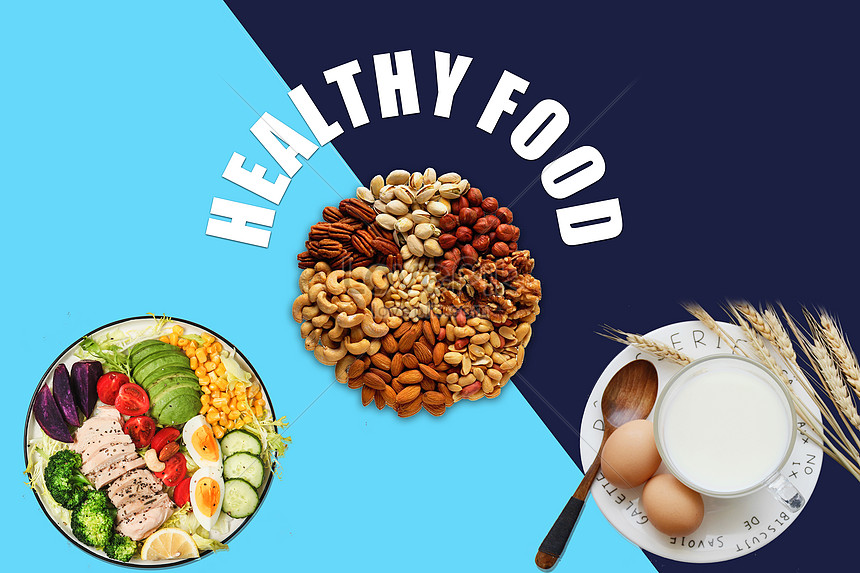

healthy Lifestyle
What you eat each day affects your health and how you feel now and in the future. Good nutrition plays a major role in helping you lead a healthy lifestyle. When combined with physical activity, your diet can help you reach and maintain a healthy weight and reduce your risk of chronic conditions such as diabetes or heart disease, and promote overall health and wellbeing. Creating and maintaining healthy eating habits doesn’t have to be hard. If you start by incorporating small changes into your daily habits, you can make a big impact on your eating pattern and create lasting, healthy eating habits. Try including at least six of the following eight goals into your diet by adding one new goal each week.
How to Maintain a Healthy Eating Lifestyle
1. Make half your plate fruits and vegetables Choose red, orange, and dark-green vegetables along with other vegetables for your meals. Add fruit to meals as part of main or side dishes or as dessert. The more colorful you make your plate, the more likely you are to get the vitamins, minerals, and fiber your body needs to be healthy. 2. Make half the grains you eat whole grains Switch from a refined-grain food to a whole-grain food. For example, choose whole-wheat bread instead of white bread. Read the ingredients list and choose products that list a whole-grain ingredients first. Look for things like: “whole wheat,” “brown rice,” “bulgur,” “buckwheat,” “oatmeal,” “rolled oats,” quinoa,” or “wild rice.”
3. Switch to fat-free or low-fat (1%) milk Both have the same amount of calcium and other essential nutrients as whole milk, but fewer calories and less saturated fat. 4. Choose a variety of lean protein foods Protein foods group includes not only meat, poultry, and seafood, but also dry beans or peas, eggs, nuts, and seeds. Select leaner cuts of ground beef (where the label says 90% lean or higher), turkey breast, or chicken breast. 5. Compare sodium in foods Use the Nutrition Facts label to choose lower sodium versions of foods like soup, bread, and frozen meals. Select canned foods labeled “low sodium,” “reduced sodium,” or “no salt added.” 6. Drink water instead of sugary drinks Drink water to cut back on unnecessary calories from sugary drinks. Soda, energy drinks, and sports drinks are a major source of added sugar and calories in American diets. To add flavor to your water, add a slice of lemon, lime, apple or fresh herbs like mint or basil. 7. Eat some seafood Seafood has protein, minerals, and omega-3 fatty acids (heart-healthy fat). Adults should try to eat at least eight ounces a week of a variety of seafood. Children can eat smaller amounts of seafood. Seafood includes fish such as salmon, tuna, and trout and shellfish such as crab, mussels, and oysters. 8. Cut back on solid fats Eat fewer foods that contain solid fats. The major sources for Americans are cakes, cookies, and other desserts (often made with butter, margarine, or shortening); pizza; processed and fatty meats (e.g., sausages, hot dogs, bacon, ribs); and ice cream.
